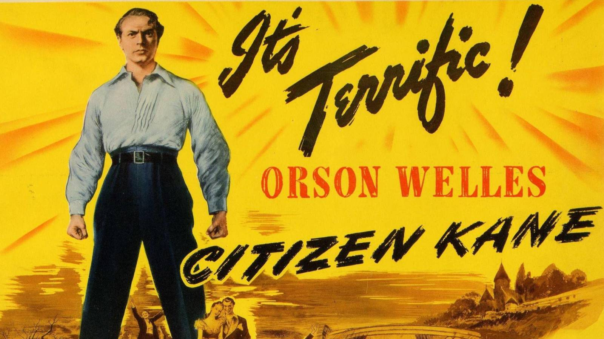

Logo
Home
Movie Data
Login
Welcome To Movie Store
Now Showing
The Wizard of Oz (1939)
Genre: Fantasy/Musical
Duration: 1h 42m
The Wizard of Oz is a 1939 American musical fantasy film produced by Metro-Goldwyn-Mayer. An adaptation of L. Frank Baum's 1900 children's fantasy novel The Wonderful Wizard of Oz, the film was primarily directed by Victor Fleming (who left the production to take over the troubled Gone with the Wind), and stars Judy Garland, Frank Morgan, Ray Bolger, Bert Lahr, Jack Haley, Billie Burke and Margaret Hamilton. Noel Langley, Florence Ryerson, and Edgar Allan Woolf received credit for the screenplay, but others made uncredited contributions. The songs were written by Edgar "Yip" Harburg and composed by Harold Arlen. The musical score and incidental music were composed by Herbert Stothart. (Wikipedia)
The Third Man (1949)
Genre: Noir/Mistery
Duration: 1h 44m
The Third Man is a 1949 British film noir directed by Carol Reed, written by Graham Greene and starring Joseph Cotten, Alida Valli, Orson Welles, and Trevor Howard. Set in postwar Vienna, the film centres on American Holly Martins (Cotten), who arrives in the city to accept a job with his friend Harry Lime (Welles), only to learn that Lime has died. Viewing his death as suspicious, Martins elects to stay in Vienna and investigate the matter. (Wikipedia)

Citizen Kane (1941)
Genre: Drama/Mistery
Duration: 1h 59m
Citizen Kane is a 1941 American drama film produced and directed by Orson Welles. He also co-wrote the screenplay with Herman J. Mankiewicz. The picture was Welles's first feature film. Considered by many critics and experts to be the greatest film ever made, Citizen Kane was voted number 1 in five consecutive British Film Institute Sight & Sound polls of critics, and it topped the American Film Institute's 100 Years ... 100 Movies list in 1998, as well as its 2007 update. Nominated for Academy Awards in nine categories, it won an Academy Award for Best Writing (Original Screenplay) by Mankiewicz and Welles. Citizen Kane is praised for Gregg Toland's cinematography, Robert Wise's editing, Bernard Herrmann's music, and its narrative structure, all of which have been considered innovative and precedent-setting. (Wikipedia)
Harry Potter and the Sorcerer's Stone (2001)
Genre: Fantasy/Child
Duration: 2h 32m
Harry Potter and the Philosopher's Stone (released in the United States as Harry Potter and the Sorcerer's Stone) is a 2001 fantasy film directed by Chris Columbus and distributed by Warner Bros. Pictures, based on J. K. Rowling's 1997 novel of the same name. Produced by David Heyman and screenplay by Steve Kloves, it is the first instalment of the Harry Potter film series. The film stars Daniel Radcliffe as Harry Potter, with Rupert Grint as Ron Weasley, and Emma Watson as Hermione Granger. Its story follows Harry's first year at Hogwarts School of Witchcraft and Wizardry as he discovers that he is a famous wizard and begins his formal wizarding education. (Wikipedia)
Alice in Borderland (2020)
Genre: Drama/Thriller
Duration: ±1h/eps (8 eps)
Alice in Borderland (Japanese: 今際の国のアリス, Hepburn: Imawa no Kuni no Arisu) is a 2020 Japanese science fiction suspense-thriller drama streaming television series based on the manga of the same name by Haro Aso. Directed by Shinsuke Sato, the series stars Kento Yamazaki and Tao Tsuchiya as allies trapped in an abandoned Tokyo where they are forced to compete in dangerous games, the type and difficulty of which are determined by playing cards. After surviving their first game, players receive "visas," which are extended the more they compete; if the visas expire, the individuals are executed by red lasers being shot from the sky. (Wikipedia)
Start-Up (2020)
Genre: Drama/Inspiration
Duration: ±1h 30m/eps (16 eps)
Needing to make $90k to open her own business, Seo Dal-Mi drops out of a university and takes up part-time work. She dreams of becoming someone like Steve Jobs. Nam Do-San is the founder of Samsan Tech. He is excellent with mathematics. He started Samsan Tech two years ago, but the company is not doing well. Somehow, Nam Do-San becomes Seo Dal-Mi’s first love. They cheer each others start and growth. (Asian Wiki)
Law School (2021)
Genre: Drama/Mistery
Duration: ±1h/eps (16 eps)
Law School (Korean: 로스쿨; RR: Roseukul) is a South Korean television series starring Kim Myung-min, Kim Bum, Ryu Hye-young, and Lee Jung-eun. It premiered on JTBC on April 14, 2021 and aired every Wednesday and Thursday at 21:00 KST.[1][2] The episodes are available for streaming on Netflix. (Wikipedia)
Demon Slayer The Movie: Mugen Train (2020)
Genre: Action/Super Power
Duration: 1h 57m
Demon Slayer: Kimetsu no Yaiba the Movie: Mugen Train (Japanese: 劇場版「鬼滅の刃」 無限列車編, Hepburn: Gekijō-ban "Kimetsu no Yaiba" Mugen Ressha-hen), also known as Demon Slayer: Mugen Train or Demon Slayer: Infinity Train, is a 2020 Japanese animated dark fantasy action film based on the shōnen manga series Demon Slayer: Kimetsu no Yaiba by Koyoharu Gotouge. The film, which is a direct sequel to the first season of the anime series, was directed by Haruo Sotozaki and written by Ufotable staff members. The film was produced by Ufotable in association with Aniplex and Shueisha. (Wikipedia)